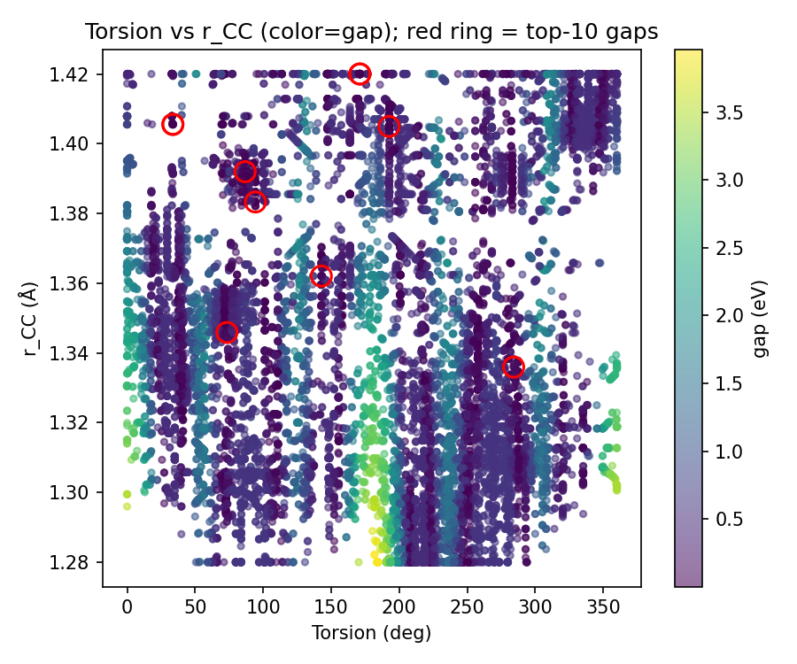
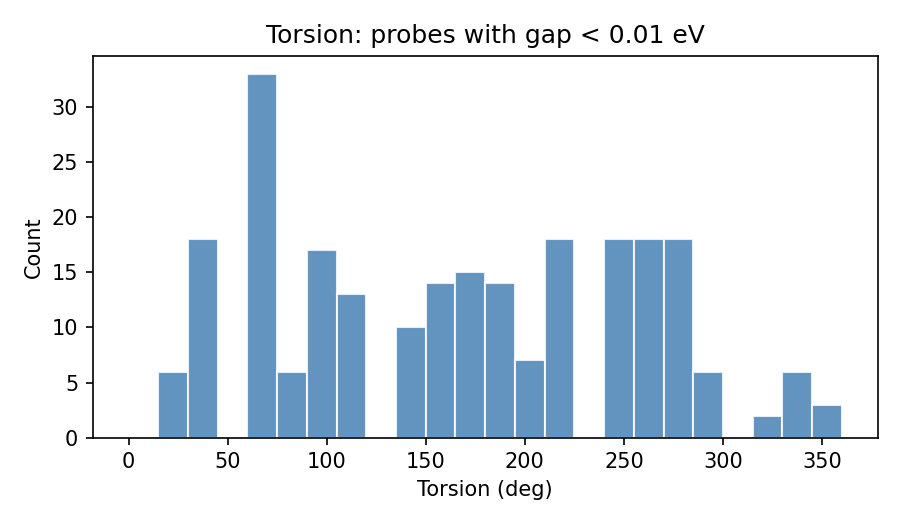
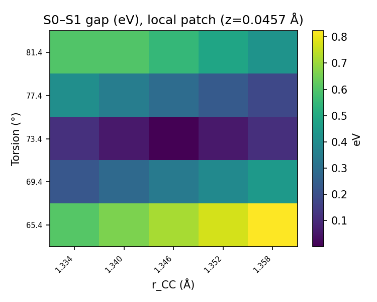
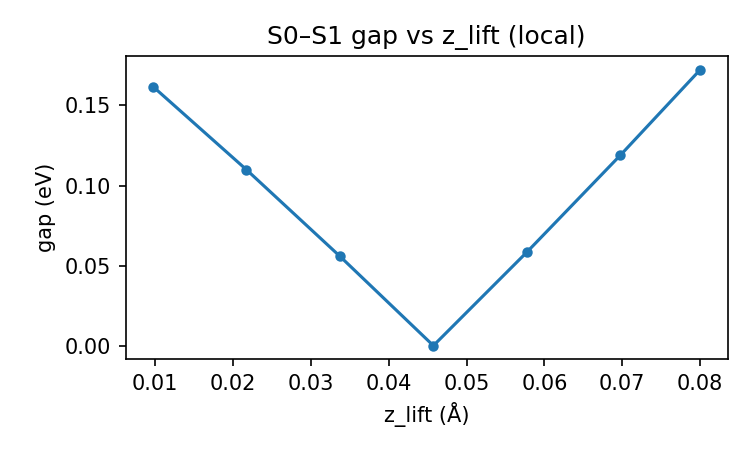

probes.jsonl on rerun (see reproducibility section).| Parameter | Value |
|---|---|
| Dimensions | 3D (torsion, rCC, z_lift) |
| Method | SA-CASSCF(2,2) |
| Seeds | 42, 137, 2011 |
| Steps | 15 |
| Population | 12 → 30 |
Score variant legacy. Main tables: regional batch validation_regional_3seeds_20260403_155239. Additional full regional run (seed 42 only): validation_20260403_211825_legacy_nd3_regional_s42 — its zor_seed_42/probes.jsonl is byte-identical to seed 42 in the 3-seed batch (cmp exit 0).
| Seed | Best gap (eV) | First <10 meV (probe #) | Top-K dominant region (K=50) |
|---|---|---|---|
| 42 | ~2.6×10−4 | 4 | B (~260°; circular mean ~238°) |
| 137 | ~2.0×10−4 | 87 | A (~70–90°) |
| 2011 | ~7.3×10−4 | 316 | B (~240–260°) |
validation_regional_3seeds_summary.json, best_appears_isolated is false for seeds 42, 137, and 2011: the minimum-gap geometry has real local support in the patch metric. The local 5×5 grid and zlift sweep figures below visualize that coherence around the best point.
| Metric | inZOR-ND | Random |
|---|---|---|
| Best gap | ~2.0×10−4 eV (best over seeds) | ~5.7×10−4 eV |
| First <10 meV | 4 (fastest seed: 42) | 141 |
Control: n_eval = 8768 uniform samples in [0,1]3 (same internal-coordinate mapping as this 3D engine). inZOR-ND reaches a sub-10 meV gap far earlier than uniform sampling on this budget (e.g. first hit at probe 4 vs 141 in this batch).
These PNGs are emitted by validate_ethylene_zor.py into logs/validation_regional_3seeds_20260403_155239/ (3 seeds, 3D regional mode) — not ad-hoc graphics from unrelated folders.
Pooled vs per-seed: the scatter, low-gap histogram, local grid, and z sweep are built from concatenated probes across seeds (same logic as regional sections H–J in the full validation write-up). Per-seed regional metrics (sector weights, first <10 meV, isolation flags, etc.) live in validation_regional_3seeds_summary.json — summarized in the main table above, not re-plotted here line-by-line.




DBSCAN on (cos θ, sin θ, rCC, zlift); hyperparameters match the regional validation cluster export used for this report.
| Cluster | Torsion (°) | Size | Multi-seed |
|---|---|---|---|
| C1 | ~70 | 14 | yes |
| C2 | ~171 | 15 | yes |
| C3 | ~258 | 12 | yes |
| C4 | ~91 | 16 | no |
| C5 | ~252 | 9 | yes |
| C6 | ~145 | 8 | no |
Rows ordered by scientific interest; sizes and angles from exported centroids.
Pooled vs per-seed: Cluster analysis is performed on pooled probes across all seeds, while regional consistency metrics are evaluated per seed.
best_appears_isolated: false — the best-gap geometry sits in a supported local patch (see figures + JSON).cmp on probes.jsonl is identical (byte-for-byte).
Scripts (under scene_ethylene_quasidegen/ in the source tree): low_gap_cluster_analysis.py — cluster_probes_jsonl(...) for one probes.jsonl (no multi-seed aggregation). compare_low_gap_cluster_stability.py — compares run A vs B (--dir-a / --dir-b or explicit paths), re-clusters low-gap points with the same DBSCAN feature space (cos/sin torsion, rCC, zlift), scales on the union of low-gap points, then reports match rate, centroid distances, approximate overlap, and verdict high / moderate / low.
| Comparison (seed 42) | cmp on probes.jsonl | Low-gap (<0.01 eV) | Clusters A/B | Matched | Mean centroid Δ (scaled) | Verdict |
|---|---|---|---|---|---|---|
validation_20260403_130511…_regional_s42 vs …155239/zor_seed_42 | identical (exit 0) | 92 / 92 | 7 / 7 | 7/7 | 0 | HIGH |
…155239/zor_seed_42 vs validation_20260403_211825…_regional_s42 | identical (exit 0) | 92 / 92 | 7 / 7 | 7/7 | 0 | HIGH |
Machine-readable output for the second row is mirrored here: ethylene_3d_artifacts/cluster_stability_rerun_211825_vs_155239.json and ethylene_3d_artifacts/CLUSTER_STABILITY_RERUN_211825_vs_155239.txt.
probes.jsonl → identical low-gap DBSCAN clusters here (HIGH, zero centroid drift) — validates determinism + clustering code path for that trace only.